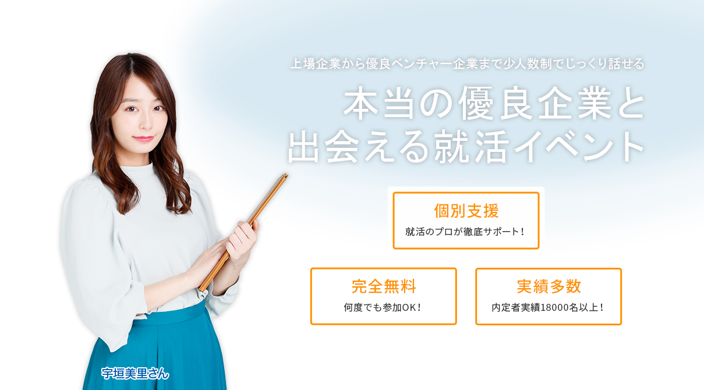

-

| 2017.06.01 | TBSのニュース番組、「Nスタ！」に取り上げられました。 |
|---|---|
| 2017.04.06 | 合同説明会・合説ならMeets companyの掲載企業が増えました。 |
Meets Companyとは？
About us
Meets Companyは優良企業と出会うことができる座談会形式の合同説明会を開催しています！ 企業の社長や人事の採用権をもつ方と直接近い距離で話すことができる、就活サービスを提供。 また、就活の不安や悩みも、プロの就活アドバイザーがしっかりサポート！
最大8社の社長や人事と直接話すことで、自分の疑問点や業界についての理解を深めましょう。
-
Point.1
最大8社の社長や
人事の方と直接話すことができる合同説明会！ -
Point.2
その場ですぐに社長や
人事の方から直接内定がでることも！ -
Point.3
プロの就活アドバイザーが徹底サポートするため不安も解決・安心！

合同説明会とは？
Joint briefing
合同説明会（合説）とはたくさんの企業が1箇所に集まり、一緒に説明会を行うことを言います。 「Meets Compnay」は少数精鋭の企業が参加する合同説明会を開催しております。
有意義な就職活動を送るために、ぜひ1度参加してみませんか？
イベント一覧
Event List
開催日程・開催場所などでイベント絞り込みが可能、お住まいの地域で開催されているイベントを検索！
エリアで検索
- 北海道・東北
- 関東
- 甲信越・北陸
- 東海・中部
- 近畿
- 中国・四国
- 九州・沖縄
近日開催予定の合同説明会
-
東京
12/4 (水)
【20卒向け】合同説明会
開催日時:11:00 ～ 15:00
-
東京
12/4 (水)
【20卒向け】合同説明会
開催日時:11:00 ～ 15:00
-
東京
12/4 (水)
【20卒向け】合同説明会
開催日時:11:00 ～ 15:00
合同説明会を
完全攻略する6つの方法
6 methods to capture
完全攻略する6つの方法
初めての就職活動で不安もたくさんあるかと思います。
そんな就活生のみなさんに向けた内定に近づくための6つの方法にまとめました！
-
合同説明会に関する情報をしっかり収集するべき
就職活動をスタートする就活生の方へ。就職活動の一連の流れをご存知でしょうか。一般的に就職活動の流れとしては大手ナビに登録 → 合同説明会 → 企業にエントリー → エントリーシート（ES）の提出 → 説明会 → 各社の選考フロー → 内定となります。
就職活動の流れの中でも合同説明会は軽視されがちです。なぜなら就職活動の流れの中で合同説明会は序盤にあります。 つまり就職活動に関しての情報もなく、モチベーションも低い時期に合同説明会というイベントを迎えるために合同説明会になんとなく参加したり、目的もなく参加することが目的となっている就活生がたくさんいます。
今回は合同説明会に参加することで周りの就活生と差をつけ、内定に近づく方法をまとめました。
合同説明会に参加することで周りの就活生と差をつける1つ目の方法は合同説明会に関する情報を集めること。 実は合同説明会にも様々な種類があります。
例えば、大手ナビが開催している様々な業界、業種の企業が大手、中小、ベンチャー企業を問わずに参加している合同説明会や業界別に企業を絞った合同説明会、中小企業やベンチャー企業のみの合同説明会があります。また、何百社が一同に集まる規模の合同説明会もあれば、8社限定の小規模の合同説明会もあります。さらに日程も就職活動の前半期のみ開催する合同説明会や通年いつでも開催している合同説明会があります。
まずはこれらの様々な合同説明会の情報を集めることが重要です。どんな企業が来るのか？参加する合同説明会の特徴は？参加することで得られるメリットは何か？時間帯や場所はいつどこで開催されるのか？など情報があればあるだけあなたの役に立ちます。
例えるならば、海外旅行に行く前にはある程度行きたい国をピックアップしてその国々の食べ物や風習、気温や名物などを調べると思います。これらの情報が多ければ多いほど、自分が旅行に行きたい国を選ぶ判断基準になるでしょう。まあ、たまに無計画旅行が好きで何も情報を集めず思いつきで旅行に行かれる方もいますが…実際に行ったらかなり楽しい旅行が出来た！という人もいます。それはそれで良いのですが無計画にはリスクがつきます。就職活動においてリスクある行動は必ずしも良い方向に転ぶとは限らず、むしろ悪い方向に転ぶことが多いです。あなたが「新卒」というカードを使って就職活動を行うことができるのは人生に一度だけです。そのたった一度のチャンスを回避できるリスクを背負って潰してしまうことは非常に危険です。そのリスクを背負わないためにもきちんと合同説明会に関する情報を集めて自分の判断基準として使用して下さい。
備考 ：大手企業、中小企業、ベンチャー企業という言葉が出たかと思いますが一般的には下記で区分されます。
【大企業の定義】 （参考：http://www.sme-matching.com/shushoku/corporation.html）
- 資本金の額又は出資の総額が3億円を越え、かつ常時使用する従業員の数が300人を越える会社及び個人であって、製造業、建設業、運輸業その他の業種（次号から第四号までに掲げる業種を除く）に属する事業を主たる事業として営むもの
- 資本金の額又は出資の総額が1億円を越え、かつ常時使用する従業員の数が100人を越える会社及び個人であって、卸売業に属する事業を主たる事業として営むもの
- 資本金の額又は出資の総額が5000万円を越え、かつ常時使用する従業員の数が100人を越える会社及び個人であって、サービス業に属する事業を主たる事業として営むもの
- 資本金の額又は出資の総額が5000万円を越え、かつ常時使用する従業員の数が50人を越える会社及び個人であって、小売業に属する事業を主たる事業として営むもの
【中小企業の定義】
上記に当てはまらないもの
【ベンチャー企業の定義】
大手企業や中小企業では対応することができない新しい技術や革新的なアイデアをもとに新しい形態の事業を立ち上げている中小企業。
就職活動を進めていくと大手企業＝安定と言ったニュアンスや中小企業＝しょぼい、ベンチャー企業＝イケイケだけどブラックのような誤った先入観を持つことが多々あります。大手企業、中小企業、ベンチャー企業といった区分は中小企業法という法律に従って分けられた区分です。大手企業でもブラックな企業はありますし、中小企業でもかっこいい会社や安定している会社もたくさんあります。ぜひこちらの区分分けは覚えておいてください。
-
合同説明会に参加する時下調べに時間をかけるべき
合同説明会に参加することで周りの就活生と差をつけるための2つ目の方法は徹底的に下調べをすることです。 合同説明会に何も調べずに参加するよりもまずは徹底的に、本当に周りにドン引きされるくらい下調べには時間をかけましょう。 合同説明会に参加する前の下調べで大きく内定に近づけるかどうかの差が生まれます。合同説明会は旅行と似ています。 先程も記載したのですが、旅行に行く前には下調べを徹底的に行ったほうがより楽しい旅行ができるかと存じます。 そして、先程は行きたい国を選定することを目的としていたため概要のみを調べていましたが今回は“プラン”や“すること”を決めるために徹底的に下調べをしていきます。これを合同説明会に置き換えると参加する合同説明会が決まったので合同説明会当日のプランを決めて、参加する目的を決めなければいけません。
1. 参加する目的を決めよう
何度も言いますが、合同説明会は旅行に似ています。旅行では自分が、何が好きかということを軸にやりたいことを決めていくかと思います。例えば買い物が好きな人であれば、ショッピングを中心に置いたり、食べることが好きな人はレストランめぐりをしたりサッカーを見るのが好きな人はスタジアム見学からの試合観戦など好きからやりたいことをピックアップしていくと思います。同じく合同説明会でも自分の好きなことを決めましょう。ただ、合同説明会での”好き”とは自分が何をしているときが好きなのか？ということから働きたい業界や業種、職場環境、会社の規模、会社の雰囲気などを決めていくことを指します。
私の知り合いで野球観戦がとても好きな人で何でも自分で物事を進めていくような人がいます。 先日、その知り合いと食事に行きましたが、会社の雰囲気が合わないとぼやいてました。上司の言ったことは絶対で自分の自由に物事を進めることができず、大好きな野球観戦に行くことも出来ないらしいです。恐らく彼は”好き”という点を考えずに就活をしたのでこの結果になったはずです。彼の場合、自分の“好き”から考えると野球に関われる仕事かつあまり企業規模が大きくなく自分で裁量権を持てるような会社に就職したほうが幸せだったはずです。
このように自分が何を“好き”なのかを考えてみて下さい。そしてまずは自分の好きなことから業界や業種、職場環境、会社の規模、会社の雰囲気を決めて下さい。 ここでようやく自分のやりたい仕事の全体像が見えてくるはずです。
2.当日のプランを決めよう
自分のすることが決まったら次は合同説明会当日のプランを決めましょう。先程自分のやりたい仕事、業種、業界などが決まったかと思います。ここから当日の参加企業の中で自分の働きたい業界の企業をピックアップしましょう。そして、自分が興味のある順番に優先順位をつけましょう。合同説明会当日はなかなか時間がないので、自分の興味のある企業の説明を聞いて回ります。ただ、合同説明会では企業の説明をする時間がバラバラです。そのため各企業の説明のタイムスケジュールを調べておきましょう。そして、ブースの場所も調べて最短で周ることができる当日のマップなども作成しましょう。こうすることで無駄な時間が圧倒的に減り、より多くの企業の説明を聞くことができます。合同説明会は本当に時間がありません。いかに効率良くブースを周ることができるかが勝負の鍵の一つとなります。
また、合同説明会当日のスケジュールを決めたら自分が企業説明を受ける企業を徹底的に調べます。と言っても当日ざっくりした内容 (会社が出来て何年目とか従業員数や売上など)は合同説明会当日に人事が話してくれるのでそれ以外を徹底的に調べてください。 例えば競合の企業と比べての強みや市場の中で今後どのような施策をいくらの投資金額で打ち、回収はいくら見込めているのかなど突っ込んだことを調べて下さい。これは当日企業の説明が終わった後に質問するために調べておいて下さい。就職活動でもよくあるのですが人事の人は就活生を採用するために自分の企業を実物よりも良く見せようという傾向があります。 ですので、しっかりと自分で知識をつけておかないと自分の理想と合わない企業に入社してしまう可能性もあります。 そして最後にプランを決める際にやってはいけないことが1つあります。それはパンパンのスケジュールを組んでしまうことだけは避けて下さい。後ほどお話しますが企業の説明会を聞くだけでは合同説明会に参加する意味がありません。運良く人事に顔を覚えてもらえば1歩内定に近づきます。これは後ほどお話させていただきます。
-
目的を決めてから合同説明会に参加することが重要
合同説明会に参加することで周りの就活生と差をつけるための３つ目の方法は合同説明会に参加する目的を明確にしていくことです。 あなたは何事にも目的をもって行動をしていますか？目的がない行動は非常に効率が悪く、時間が無駄になります。例えばあなたが今晩カレーを作るために食材を買いに行くとします。あなたはスーパーに買物にいきます。そして、お肉、野菜、カレーのルーなどを購入するためにスーパーの中を歩き回り、食材を購入すると思います。
しかし、もしカレーを作るという目的がなかったらどうでしょうか。スーパーに入り、晩御飯は何を作るかから考えます。そして、スーパーの中を一周しながら自分の気になったものを手に取り一つ一つ考えながら食材を探していきます。前者と比べると非常に効率が悪く無駄な時間がかかっているのがわかるかと思います。
ではこれを合同説明会に置き換えてみましょう。合同説明会で自分が内定のほしい企業の人事に気に入られるという目的を持って合同説明会に参加するとします。するとあなたは合同説明会の会場で自分の行きたい企業の説明を聞くために真っ先に企業のブースに向かうかと思います。そして、企業の説明会の最中に企業の情報を逃さずに聞き、説明会終了後には人事のもとにかけよって就活の相談や企業の情報を詳細に聞いて人事に猛烈にアピールするかと思います。
しかし、合同説明会に目的もなく参加する人はどうでしょうか。とりあえず合同説明会の会場で自分の興味のある企業を探し回り、自分が興味のありそうな企業の説明を聞きます。そして、それなりの情報を集めてそれで終わると思います。前者とくらべて合同説明会に参加しているのですが企業のブースを回る効率や貴重な一日の時間が無駄になることがわかるかと存じます。
そのため合同説明会には必ず目的をもって参加しましょう。
また、ここで問題となる点がどのような目的をもって合同説明会に参加すべきなのかという問題が出てくると思います。 一般的に合同説明会に参加する目的として企業の情報収集が一般的な目的になります。気になる企業のホームページを見るだけでは集めることができない情報を合同説明会で企業の人事から説明してもらい今後エントリーするかどうかを決めるために参加する就活生が多いです。
また、自分が狙っている企業と同じ業界の企業の説明会に参加し、より詳細な業界の情報を集める就活生もいます。自分が内定のほしい企業からだけではなく、より詳細な情報を得るために競合の企業の説明会に参加したり他の企業の人事から情報を集めたりすることを目的として参加する就活生の方もいます。こうして自分が行きたい企業と同じ業界にいる企業の説明を受けることでより業界の知識が深くなっていきます。そしていろんな業界を知ることを目的として合同説明会に参加する人もいます。彼らはひたすら会場内を周り、企業のパンフレットをもらいながら情報を集めていきます。彼らにとっては企業の説明よりも一社でも多く企業のパンフレットなどを集め、情報を収集することが目的となっているのです。
上記以外に私が合同説明会で目的としてほしいことがあります。それは自分が内定のほしい企業の人事に気に入られるということです。詳しくは後ほど書きますが、企業の人事に合同説明会で気に入られることはとてもメリットがあります。 というよりも就職活動の一環で人事の人に気に入られることはとても大きな一歩を踏み出しております。それはほぼ内定が出たといっても過言ではありません。採用活動の中で人事は自社の採用基準を設定し、その基準より高い優秀な人材を採用しなければいけません。一般的にこの採用の基準は就活生には公開されませんが、人事の方と仲良くなるとこの採用基準を教えてくれることがあります。もし教えてもらえればその採用基準を超えるように自分を設定すればよいという話になります。以上のことから就職活動において、人事と仲良くなることは非常に重要です。ぜひ合同説明会に参加する目的はあなたが入りたい企業の人事の人と仲良くなることを目的として参加してください。
-
先輩たちに合同説明会の体験談を聞いておくべき
合同説明会に参加することで周りの就活生と差をつけるための4つ目の方法は先輩に体験談を聞いておくことです。就職活動をしていく上で情報は非常に重要となります。就職活動をする上での情報というと一般的に合同説明会の情報、エントリーシートの締切、エントリーシートの内容、グループディスカッションのお題、面接の質問、会社の情報、会社の採用人数など上げればキリがありません。これらの情報を知っている人と知らない人では就職活動をする上で非常に優劣が生まれます。例えば合同説明会の開催する日時や場所を知らない人は当日参加できない可能性もあります。また、場所がわからず迷子になり参加できない場合もあります。先程まででかなり事細かに記載していますが、参加企業を知らないと合同説明会当日に参加企業のブースをいったりきたりすることになります。それに対して情報を的確に抑えている人は時間の効率よく、自分の行きたい企業のブースにたどり着くことができます。このように就職活動を進めていく上で情報は非常に大事なものになります。では情報はどのように集めればよいでしょうか？
一般的に情報がWEB上で企業のコーポレートサイトを調べたり採用ページを見て調べたりします。 そして、四季報なども購入して過去のデータを調べ、合同説明会専用の特設ページから情報を得ることもあります。
しかし、これらの調べ方だけで満足してはいけません。必ず先輩の体験談を聞いて下さい。合同説明会に参加する前には先輩の体験談を聞くことは必ずあなたの役に立ちます。なぜなら、WEB上で公開されている情報だけではわからない企業の評判やイレギュラー対応、先輩が感じた企業の雰囲気などの情報を共有してもらえるからです。
例えば、あなたの先輩は合同説明会に行く際に企業の情報も徹底的に調べて当日は時間の無駄が出ないようなプランを立てて合同説明会に向かいました。しかし、当日、目当ての企業のブースで企業の説明を聞いたのですが、WEBサイトで調べたものと全部同じ内容でした。さらに質疑応答の時間もありませんでした。これではせっかく時間を作ったにも関わらず自分の知っている内容を話されて人事と接触することも出来ずに結局合同説明会にきて無駄な時間を過ごしてしまいました。
もう一つ例を上げましょう。あなたにとてもずる賢い先輩がいるとします。その先輩は合同説明会に朝から参加せず終了の1時間ほど前に到着しました。そして、目当ての企業の説明会にだけ参加し終了直前までその企業の説明を聞き、人事ととても仲良くなりました。そして、ちょうど合同説明会が終わるので終了後にお食事に出かけていき、より詳細な情報を手に入れました。
この先輩のやり方は頭がよく、他の就活生よりもかなり有利に就活を進めていますよね。
上記2つの例のように就職活動では何が起きるかわかりません。また、本当に良い情報ほどWEBでは公開されておらずクローズドな環境でしか手に入りません。そのため、先輩のリアルな話ほど貴重で役に立つ情報が紛れ込んでいる可能性があります。 また、合同説明会に参加した先輩の話を聞くべき理由として、会社の雰囲気がわかるという点があります。もしあなたとあなたの先輩の仲が良いのであれば物事を似たような感覚で捉えることが出来ている可能性が高いです。つまり、先輩が合同説明会で企業の説明を聞いて感じたことがあなたに当てはまる可能性が高いということです。 もし先輩がある企業のブースで話を聞いたときに「この会社真面目すぎて面白くなさそう」「この会社ちょっと皆ちゃらそうだし辞めておこう」と先輩が感じた内容があなたにも当てはまる可能性が高いということです。企業の雰囲気を知るにあたってあなたの先輩の話ほど役に立つ情報はありません。こうすることであなたが合同説明会に行く際に興味のある企業を取捨選択する基準となることは間違いありません。
-
合同説明会は迅速に行動 人事の方へアピールが大事
合同説明会に参加することで周りの就活生と差をつけるための5つ目・6つ目の方法は合同説明会当日に迅速に行動すること、人事に顔を売ることです。 まず、説明会当日は仁祖速に行動するときのメリットについて説明します。先程までかなり詳細に合同説明会当日に向けてプランを決めました。あとはそのプランに従って迅速に行動しましょう。注意点として合同説明会には必ず一人で参加して下さい。友達と行くと100％自分の立てたプランどおりに物事が進みません。そのため参加する際には必ず一人で参加するようにしましょう。
続いて、人事の方へ顔を売るということについて説明します。就職活動において人事に顔を売ることは非常に重要なことになります。変な例えを出すとハンバーガー屋さんのハンバーグくらい重要です。そもそも就職活動において人事という仕事は一体どういう仕事をしているのかという点から説明していきます。人事というお仕事は会社を大きくしていく上で将来的に自社に貢献できる社員を採用するという仕事になります。また、企業の成長戦略から逆算して必ず目標となる採用人数を採用しなければいけません。例えばA社は来年10億円の売上を作ることを目標として考えています。しかし、社員1人が年間で稼いでくる金額は5000万円で社員数は現在14人しかいません。単純な計算をするとA社が来年10億円の売上を作るためには6名の人材を採用しなければ目標に到達しません。（A社の1人辺りが稼ぐことができる金額は5000万円を上限とします。）このような企業の成長戦略から人事は採用人数というノルマを課されているのです。
さて、ノルマを課された人事は人を採用するために合同説明会に参加します。ここで色んな就活生と接点をもつことで自社の選考に進んでもらえる人数が決まります。そのため人事はできるだけ多く与えられた予算内で合同説明会に参加します。そして接点をもった就活生に選考に進んでもらい、内定を出します。そして与えられたノルマをこなすことが人事というお仕事になります。
人事の仕事を頭に入れておきつつなぜ就活中に人事に顔を売ることが非常に重要なのか説明していきます。
人事と仲良くすることが重要な理由は2つあります。
人事と仲良くすることが重要な理由の1つは様々な情報が手に入るからです。人事が所属している企業の採用情報や社内の情報、どんな事業をしているのか、社内の雰囲気などがわかります。また、その企業が行っている事業の業界情報や競合情報や就活する上で大事なことなどたくさんの情報が手にはいります。人事は面接官である前に就活のプロであり、毎年面接を行っています。そのため良い就活生の見抜き方や内定が出やすい就活生の特徴などをしっかりと抑えています。そして面接官である前に社会人のため、競合情報や社会常識にも学生と比べて長けています。つまり、人事と仲良くできれば就活を有利に進める術からその企業の情報などを手に入れることが出来ます。
2つ目の理由として、人事と仲が良いと面接に通りやすくなります。あなたが面接で逆の立場であると想像してみて下さい。 仲の良い就活生と今日初めて出会った就活生が同じ能力だった場合にはどちらの就活生に内定を出しますか？ 確実に仲の良い就活生に出すかと思います。また、面接の際にも人事の〇〇さんの話を踏まえた上で御社の〇〇という点に惹かれました。などと仲良くしている人事以外の人に話すと共通の知り合いがいたとして好感度があがります。Facebookで共通の友達がいた！みたいな感覚ですね！ 上記2点から確実に人事と仲良くするべきです。
また、合同説明会の時期に人事に接触することでエントリーから選考までの対策を行うことが出来ます。 就活の序盤に人事と仲良くなることで本当の選考が始まるまでの時間を人事の情報をもとに非常に有効に使うことができます。
ではどうすれば合同説明会で人事に顔を売ることが出来るのか？合同説明会で人事に顔を売る方法は2つあります。
1つ目は誰にでも出来る方法です。 人事の方が合同説明会で説明が終わった後に当日の夜に食事に誘ってみて下さい。説明会が終わった後に少し企業の質問を持って人事に話しかけてみて下さい。その会話の中で「御社のことがもっと知りたいのですがこの後お時間あればお食事にでも連れて行って下さい」とストレートに声をかけてみましょう。気のいい人事の方だと連れて行ってくれます。ポイントとしてはできるだけ最後の説明会後に話しかけてみましょう。合同説明会では説明の間と間の時間が非常に短いです。そのため長々と話すと人事の方の迷惑になる可能性があります。そのため、合同説明会の終わりの時間に出来れば話しかけてみましょう。しかし断られるケースもあると思います。合同説明会の開催時間は18時ころまであるのが一般的です。また、合同説明会終わりには当日の集計や後片付けなどがあるので忙しいからです。その場合はぜひ別日程の提案をしましょう。もしくは連絡先を聞いて必ずこちらからしつこく連絡しましょう。ここまでする就活生はなかなかいないので確実に人事の人の印象に残ります。
2つ目は少し難しい方法になります。 人事の方が合同説明会の説明後に鋭い質問をしましょう。この質問をするにはかなり勉強しつつ当日の人事の人にアピールできるような質問をしなければいけないためかなりハードルが高いです。周りの人と差別化出来る自信のある人にはおすすめです。
このように合同説明会では必ず人事に顔を売ることを意識して下さい。 どうしても志望企業がたくさんある場合は人事の連絡先だけは必ず抑えて後日連絡するようにしましょう。
-
帰宅後に参加した合同説明会について振り返えろう
合同説明会に参加することで周りの就活生と差をつけるための6つ目の方法は帰宅後にきちんと合同説明会に参加した日の企業を振り返ることです。なぜならば合同説明会に参加することで手に入った新しい情報を整理し、次のエントリーシートなどにつなげていく必要があるからです。一般的な就活生は合同説明会に参加するだけで満足します。合同説明会に申込み、合同説明会当日に企業のブースを周り、企業の人事の話を聞く。そして合同説明会でもらえるパンフレットやノベルティ（ボールペンなど）をもらい満足して帰ります。そして、ESや面接が来たときには企業の情報を一から集めて対策を練っていきます。本当に合同説明会に参加する意味が全くありません。もしくは合同説明会に参加した当日のノートをチラっとみるくらいの方も同じく合同説明会に参加した意味がまったくありません。では合同説明会に参加した日の振り返りはどのようにすればよいでしょうか。
それは下記2つのポイントを抑えて振り返りを行って下さい。
1.本当に自分の行きたい企業かどうか
合同説明会で企業の人事の話を聞いてみて本当にその企業に選考を進める気持ちになったのかどうかを判断してください。 最初にありかなしかはっきりと区別をつけることで無駄なESの作成や無駄な企業の個別説明会への参加を防ぐことで時間の無駄を減らします。2.各企業の採用バーを探す
採用バーとはそれぞれの企業が持つ採用の基準になります。例えば学歴は関関同立、MARCH以上、TOEICが800点以上あり、海外留学経験のあるポジティブで素直な学生。また、プライベートよりかは仕事一筋でガツガツ仕事熱心な人材のような詳細な人物像が各企業にあります。採用バーは合同説明会に参加してぜひ探って下さい。この採用バーを明確に把握すると後々のESや面接が非常に楽になります。なぜならば採用バーを越えるようなエントリーシートを書いたり、面接の受け答えで採用バーを越える人を演じれば良いのです。例えば上記の採用バーをもつ企業のエントリーシートや面接では海外留学経験をベースにしてポジティブに過ごし、周りの大人に言われたことを素直にこなし、毎日３時間睡眠で頑張った結果、大きな成果を達成しましたといったストーリーを作ることが出来ればベストになります。つまり、エントリーシートで記載する内容や面接で話す内容が明確になります。 上記の２点が合同説明会に参加した後に振り返るべきポイントになります。これらを振り返り必ず効率よく、企業の選考に進むための糧として下さい。ただ合同説明会に参加した後に振り返りをすることはとてもめんどくさいです。しかし、誰もやらないことをやるからこそ周りと差が生まれるのでぜひ取り組んで下さい。 以上合同説明会に参加することで他の就活生と差をつける6つのポイントをご紹介致しました。 ぜひ就活が始まる前の2021年卒 今の3年生に参考になればと存じます。